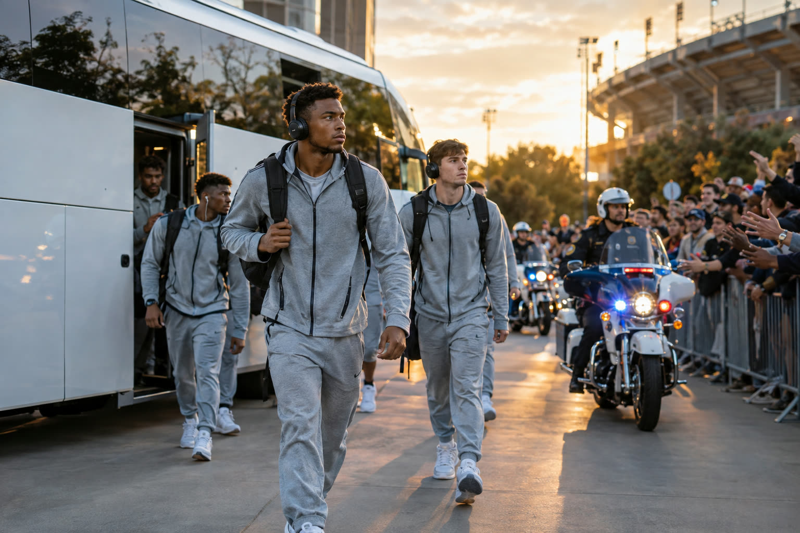
01
Team Charters
High school Friday nights to college Saturdays and pro road trips. The ride to the end zone, and the ride home.
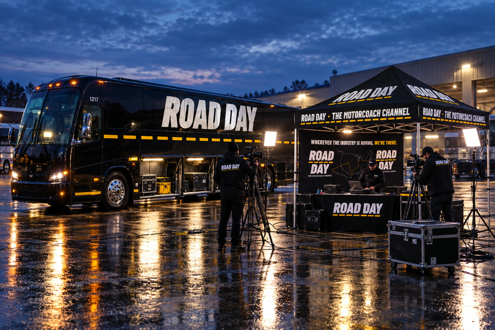
The Motorcoach Channel presents
Wherever the industry is moving, we’re there.
The traveling game-day show for the motorcoach industry. One coach, one crew, a new town every week, telling the stories of the people who move America.
The Show
Road Day is GameDay for the people behind the wheel. We roll into town, pop up the tent, and cover everything a motorcoach touches: the team bus, the tour group, the destination and the family company that makes it all run.

High school Friday nights to college Saturdays and pro road trips. The ride to the end zone, and the ride home.
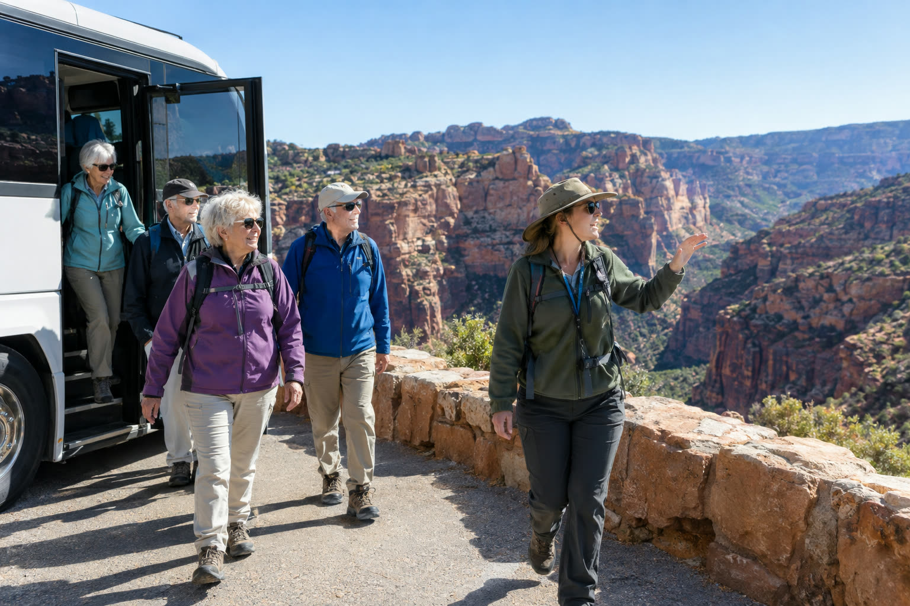
National parks, city nights, church trips and school trips. The tour director is the heartbeat of the coach.
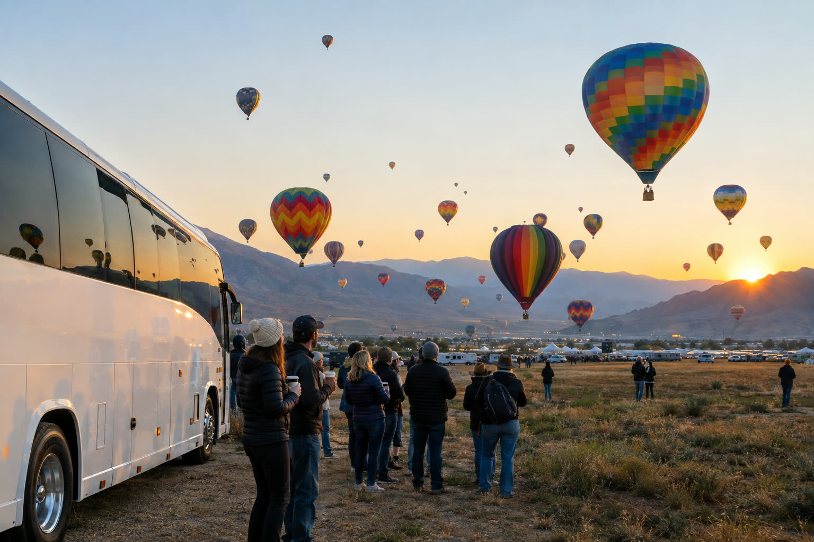
Attractions, CVBs, state tourism offices, parades, festivals and balloon fiestas. The towns that roll out the welcome for groups.
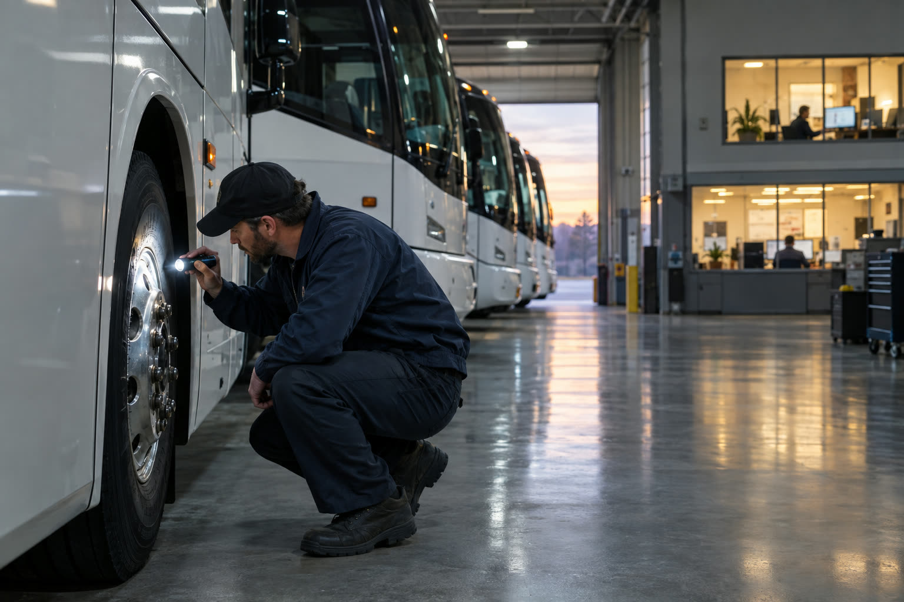
The owners, dispatchers, mechanics, wash crews and million-mile drivers. The family names on the side of the coach.
Episodes
Season one opens in Columbus, then rolls to the Smokies, Athens, Connecticut and Shreveport, with a show-day run to St. Louis.
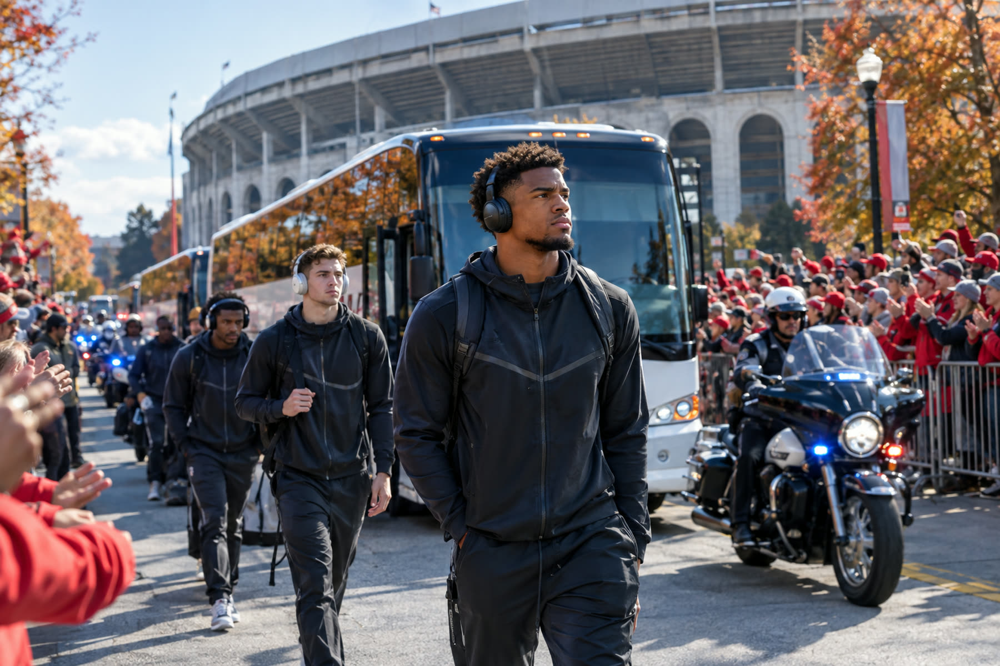
Cardinal Transportation · Columbus, Ohio
Before he drove the Buckeyes, he washed their buses. Roy Alonso went from Ohio State’s bus wash to co-founding Cardinal Transportation, the official transportation provider for the Ohio State football team and a 2025 UMA Vision Award winner. Five days in Columbus, ending with the game-day drop-off.
Rocky Top Tours · Pigeon Forge → Knoxville, Tenn.
All week they show people the Smokies, from Cades Cove to the Alum Cave trailhead. On Saturday they run fans down U.S. 441 to Neyland for Tennessee vs. Alabama, with the whole bus singing “Rocky Top” on the way.
Champion Coach · Greenville, S.C. → Athens, Ga.
A family company founded by two Georgia grads carries the Bulldogs to the Dawg Walk. We go live from the middle of the North Campus tailgate.
DATTCO · Connecticut
Two games, two arenas, one fleet. DATTCO moves UConn basketball across the state on a doubleheader Saturday, from Hartford to Storrs.
Campbell Bus Lines · Slippery Rock, Pa. → Shreveport, La.
It takes nine coaches to move the Pride of West Virginia. Campbell Bus Lines loads the band in Morgantown and runs a thousand miles to the 50th Independence Bowl, from the bowl-week parade to “Country Roads” on the field.
Timi’s Tours · Moweaqua, Ill. → St. Louis, Mo.
Timi Hall-Kaufman takes four seats out of her coach so her travelers get more legroom. We ride from the Springfield pickup to a touring Broadway show at the Fabulous Fox, and find out why her groups keep coming back.
Operators, athletic departments, attractions, destinations, CVBs and state tourism offices: we’re booking the rest of the season.
Pitch a stop →The Route
Every stop becomes an episode. The dashed line fills in as the season rolls.
The Rundown
From the episode 1 storyboard. About 20 minutes, cold open to sign-off.
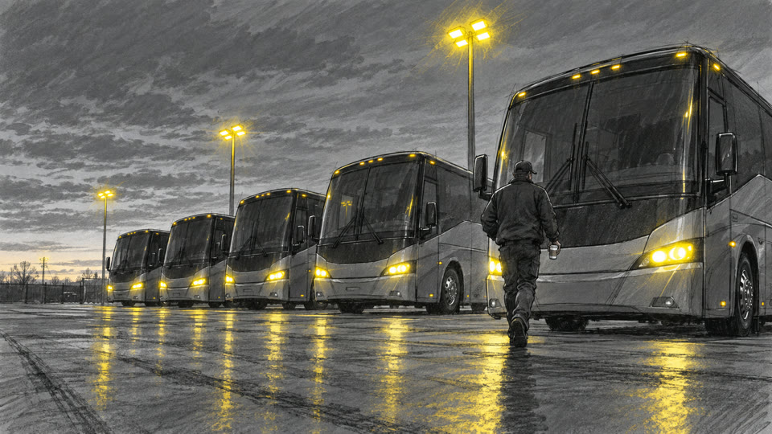
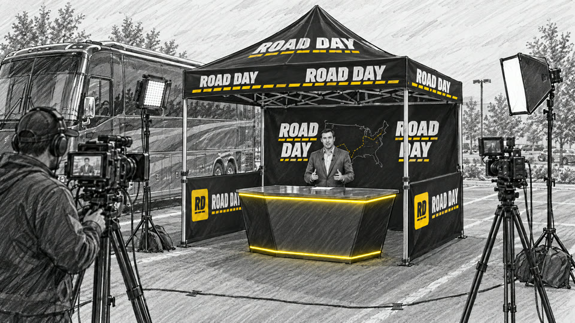
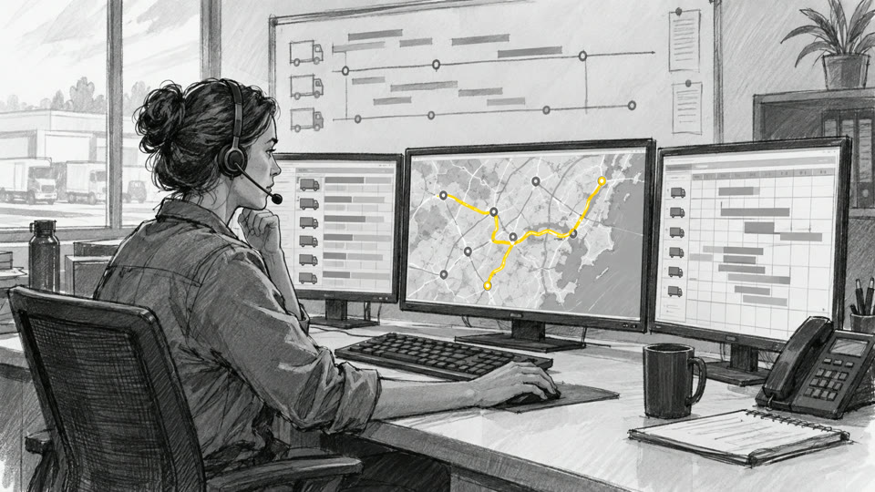
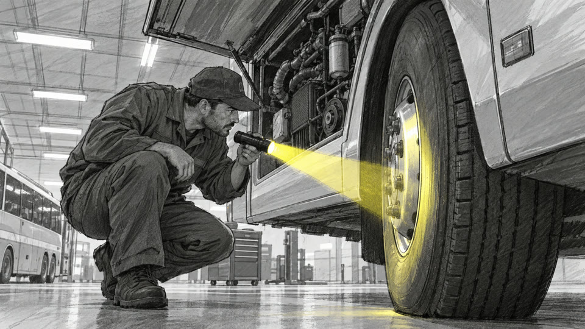
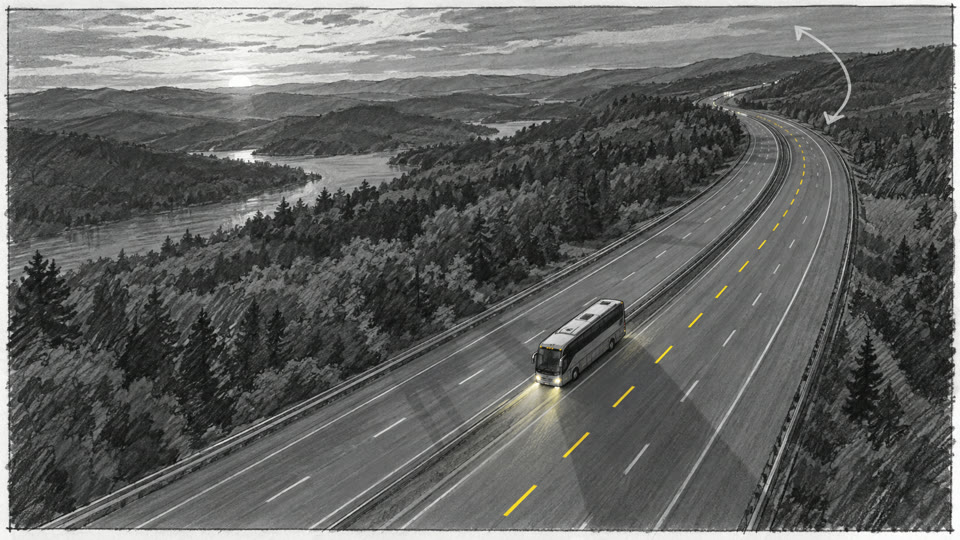
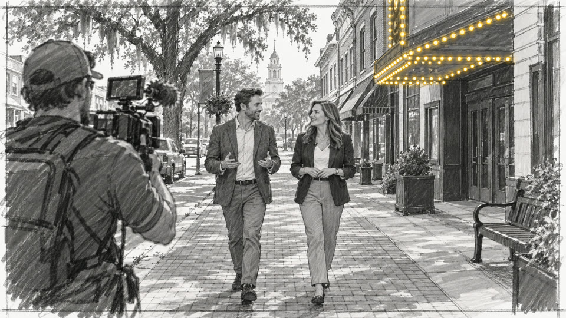
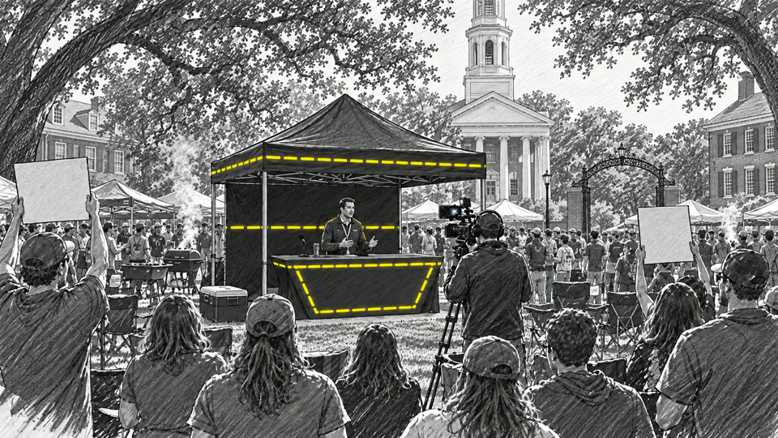
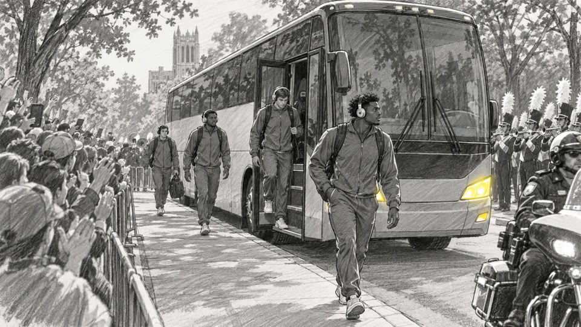
The Set
The whole studio travels under the coach. The branded tent, lights and cameras come out of the bays, and we’re live in minutes, whether that’s the operator’s yard or the middle of a tailgate.
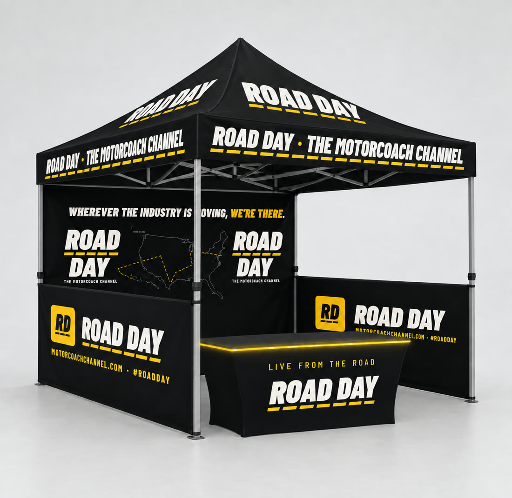
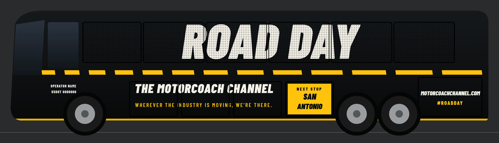
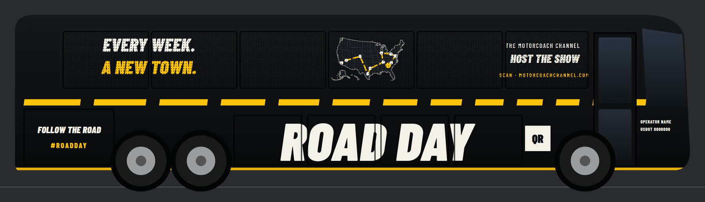
Watch
The Road Day opening sequence. Turn it up.
The Theme
Rock meets hip-hop · 95 BPM
It’s Road Day! Rollin’ through America
From the yard to the arena
Every town, every crowd,
we the ones that take you there.
Host the Show
We’re lining up season one stops. Tell us who you are and what we should see.